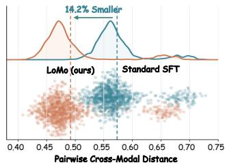
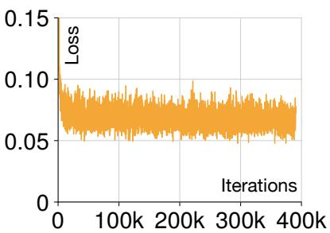

今日主线 · arXiv
Cycle Consistency in Video Object-Centric：自监督视频 object-centric learning，提出隐式 cycle consistency 避免 slot collapse，直接命中通用视频表征
自监督视频 object-centric learning，提出隐式 cycle consistency 避免 slot collapse，直接命中通用视频表征。

自监督视频 object-centric learning，提出隐式 cycle consistency 避免 slot collapse，直接命中通用视频表征。
P0
高相关；详见方法、贡献和实验边界。
方法：自监督视频 object-centric learning，提出隐式 cycle consistency 避免 slot collapse，直接命中通用视频表征

P0高相关；详见方法、贡献和实验边界。
方法：用局部模态替换暴露 VLM 对文本/图像载体的表征不等价，适合指导视觉-语言自监督数据与目标设计
高相关；详见方法、贡献和实验边界。
方法：GASP 用 contrastive correspondence 与 depth consistency 学几何先验，比单纯 3D VQA 微调更接近空间表征预训练

P0高相关；详见方法、贡献和实验边界。
方法：1 亿训练图像、VLM caption、许可友好与去重安全过滤，适合作为视觉生成/基础模型预训练数据源观察
 P1
P1
中高相关；详见方法、贡献和实验边界。
方法：从多模态 contrastive finetuning 理论解释 self-distillation，并提出 WMA teacher 防止 EMA collapse